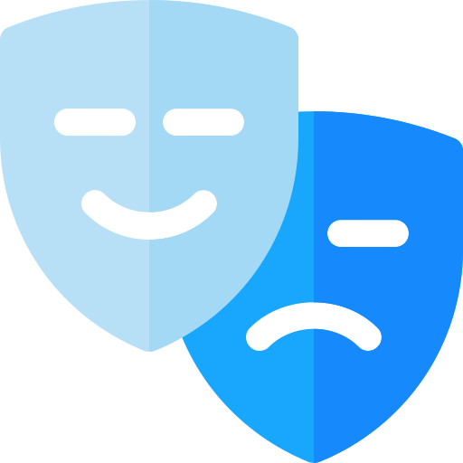

Cogitomanía
Cogitomania es un proyecto de divulgación que intenta contagiar la curiosidad, tocando temas tan diversos como la psicología, la filosofía, las neurociencias, entre otros campos. Puede disfrutarse el contenido desde diferentes plataformas, twitch, youtube, instagram, y más. ¡La curiosidad es una cuestión de actitud!
¡PODCAST!
Ele formato audio está creciendo en los últimos tiempos, y no se nos ocurrió mejor idea que crear podcast para divulgar los temas más variados de diferentes campos del conocimiento. Desde entender la consciencia, hasta descubrir los misterios que encarna el fenómeno de la consciencia. Disponible los episodios en Spotify y Youtube.
CIENCIA
Desde las neurociencias hasta la historia, de la psicología hasta la filosofía. Los campos son muy diversos, y la curiosidad ilimitada. El objetivo principal del proyecto es transmitir algunas cuestiones en torno a los temas más apasionantes de las ciencias. Estás invitado a descubrir el mundo maravilloso de los avances científicos.
CULTURA
La ciencia no se construye en un vacío. Las ciencias son un fenómeno social, y otras construcciones culturales se alimentan de ella para existir. La música, el cine, la literatura, entre otras producciones artísticas, se han alimentado históricamente de los nuevos avances científicos, creando así grandes obras con gran contenido científico. En cogitomania se abordan estas obras, y cual fue su impacto en el contexto.